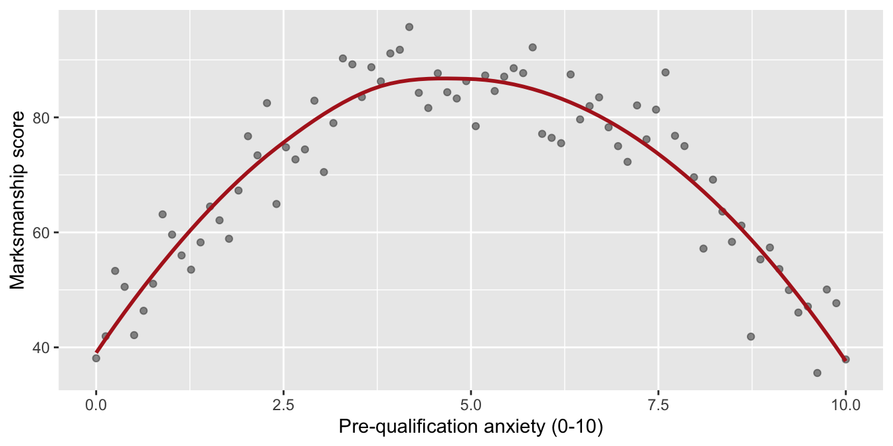

library(tidyverse)
library(correlation)
cities <- read_csv("https://smourtgos.github.io/crju705/data/cities-wide.csv")Practice Problems · Session 10
Correlation: covariance to r, what r can’t see, and inference in both traditions
Ungraded self-checks. Work each problem in your own R session before clicking the solution. These use different data and variables than the homework on purpose — if you can do these cold, Homework 10 (and Checkpoint 2 on your own project) will feel routine.
Problems that use data need only this setup — cities is the 100 simulated-but-realistic cities you pivoted in Lab 4; today we stay in one year and go cross-sectional. One row = one city, not one person. Keep that in mind: it decides what your sentences are allowed to claim (Problem 6 will test you on it).
Problem 1 · Covariance’s units problem
Compute the covariance of vcr_2025 (violent crimes per 100,000 residents) with population_2020, and then with poverty_rate. One of these covariances is roughly 3,800 times the size of the other. Is that association 3,800 times stronger? Settle it: divide each covariance by the two standard deviations involved, then confirm with cor().
Tip
Solution
cov(cities$population_2020, cities$vcr_2025)[1] 3449575cov(cities$poverty_rate, cities$vcr_2025)[1] 914.0015[1] 0.04429418[1] 0.6082377cor(cities$population_2020, cities$vcr_2025)[1] 0.04429418cor(cities$poverty_rate, cities$vcr_2025)[1] 0.6082377The ~3.4-million covariance turns into r = 0.04 — essentially nothing — while the “little” 914 becomes r = 0.61. The first number was huge only because population is measured in hundreds of thousands of people; covariance is glued to its units, so its size is uninterpretable across pairs. Dividing by both SDs cancels the units and puts every pair on the same −1 to +1 ruler.
Problem 2 · What r can’t see
A training study measures 80 recruits’ pre-qualification anxiety (0–10 scale) and their marksmanship score (100-point course). Simulate it, compute r, and then plot it:
A colleague computes cor(), gets roughly −0.04, and writes: “anxiety and marksmanship are unrelated.” What did they miss, and what habit would have caught it?
Tip
Solution
cor(recruits$anxiety, recruits$marksmanship)[1] -0.04161482ggplot(recruits, aes(anxiety, marksmanship)) +
geom_point(alpha = 0.6, color = "grey30") +
geom_smooth(method = "loess", se = FALSE, color = "firebrick") +
labs(x = "Pre-qualification anxiety (0-10)", y = "Marksmanship score")
r ≈ −0.04, and the plot shows anything but “unrelated”: scores peak around mid-scale anxiety and collapse at both extremes — a strong inverted-U (the classic arousal-performance curve). Because the upslope and downslope cancel, the linear summary lands near zero. r measures straight-line association only; r ≈ 0 means no linear relationship, not no relationship — which is why you plot before you correlate, every time.
Problem 3 · One unit can manufacture a correlation
Twenty patrol beats, each with an average 911 response time (minutes) and a resident satisfaction score (0–100). Then the analyst appends beat 21 — the beat covering the airport, a giant low-density parcel: response time 28.4 minutes, satisfaction 31.
Compute Pearson’s r and Spearman’s rho for the 20 beats, and again with the airport included. What happens to each — and which coefficient is telling the more honest story about the typical beat?
Tip
Solution
pearson_20 spearman_20
0.03864620 -0.01654135 pearson_21 spearman_21
-0.8071187 -0.1506494 Twenty beats show essentially nothing (r ≈ 0.04). Add one unrepresentative unit and Pearson leaps to ≈ −0.81 — a “very strong” negative correlation manufactured entirely by a single point sitting far out in both variables. Spearman moves only from ≈ −0.02 to ≈ −0.15, because to a rank-based measure the airport is just “rank 21,” not “a dozen standard deviations of leverage.” Neither number substitutes for the scatterplot — but when one wild unit is in the data, Spearman describes the typical beats far more honestly, and a Pearson-Spearman gap this large is itself a red flag to go look.
Problem 4 · Inference: the matrix, then the star pair
Run
correlation()onvcr_2025,poverty_rate,unemployment_rate, andpolice_per_10k. Which pairs survive the Holm adjustment — and why do these p-values need adjusting at all?The star pair is poverty and violence. Run
cor.test()on it and write the one-sentence lecture-style report: r, df, p, CI, direction, strength.
Tip
Solution
cities |>
select(vcr_2025, poverty_rate, unemployment_rate, police_per_10k) |>
correlation()# Correlation Matrix (pearson-method)
Parameter1 | Parameter2 | r | 95% CI | t(98) | p
---------------------------------------------------------------------------------
vcr_2025 | poverty_rate | 0.61 | [ 0.47, 0.72] | 7.59 | < .001***
vcr_2025 | unemployment_rate | 0.08 | [-0.11, 0.28] | 0.84 | > .999
vcr_2025 | police_per_10k | -0.09 | [-0.28, 0.11] | -0.90 | > .999
poverty_rate | unemployment_rate | 0.05 | [-0.15, 0.24] | 0.48 | > .999
poverty_rate | police_per_10k | 0.05 | [-0.15, 0.24] | 0.46 | > .999
unemployment_rate | police_per_10k | 0.16 | [-0.04, 0.34] | 1.58 | 0.591
p-value adjustment method: Holm (1979)
Observations: 100cor.test(cities$poverty_rate, cities$vcr_2025)
Pearson's product-moment correlation
data: cities$poverty_rate and cities$vcr_2025
t = 7.5858, df = 98, p-value = 1.92e-11
alternative hypothesis: true correlation is not equal to 0
95 percent confidence interval:
0.4676946 0.7187836
sample estimates:
cor
0.6082377 Exactly one pair survives: poverty with violent crime (r = .61, adjusted p < .001). Every other CI crosses 0, with adjusted p-values from .59 to essentially 1. The adjustment exists because this table runs six tests at once — six chances at a 5% false alarm is Session 8’s pile-of-t-tests problem wearing correlation clothes, and Holm restores the family-wise honesty.
“Across these 100 cities, poverty was moderately associated with the violent-crime rate, r = .61, t(98) = 7.59, p < .001, 95% CI [.47, .72] — cities with higher poverty rates recorded more violent crime per 100,000 residents.” (By the lecture’s bands, .61 is a moderate correlation — and in messy social-science data, a moderate r is a major finding.) A correlation matrix is the map;
cor.test()is the full readout you pull for the one relationship your analysis is actually about.
Problem 5 · Bayesian correlation: a strong pair and an honest null
Run the Bayesian version (bayesian = TRUE) twice: once on poverty_rate + vcr_2025, once on unemployment_rate + vcr_2025. For each, read out rho, the 95% credible interval, pd, % in ROPE, and the Bayes factor. For the second pair, also compute 1/BF. What can you say about unemployment that a p-value never could?
Tip
Solution
set.seed(705) # inline seed: the Bayesian version samples from the posterior
cities |>
select(vcr_2025, poverty_rate) |>
correlation(bayesian = TRUE)# Correlation Matrix (pearson-method)
Parameter1 | Parameter2 | rho | 95% CI | pd | % in ROPE
---------------------------------------------------------------------
vcr_2025 | poverty_rate | 0.58 | [0.46, 0.70] | 100%*** | 0%
Parameter1 | Prior | BF
----------------------------------------
vcr_2025 | Beta (3 +- 3) | 4.25e+08***
Observations: 100set.seed(705)
bayes_unemp <- cities |>
select(vcr_2025, unemployment_rate) |>
correlation(bayesian = TRUE)
bayes_unemp# Correlation Matrix (pearson-method)
Parameter1 | Parameter2 | rho | 95% CI | pd | % in ROPE
--------------------------------------------------------------------------
vcr_2025 | unemployment_rate | 0.08 | [-0.11, 0.25] | 79.83% | 55.05%
Parameter1 | Prior | BF
-----------------------------------
vcr_2025 | Beta (3 +- 3) | 0.319°
Observations: 1001 / bayes_unemp$BF[1] 3.129932Poverty: rho ≈ .58 (a touch below the frequentist .61 — the mildly skeptical prior’s pull), 95% CI ≈ [.46, .70], pd = 100%, 0% in ROPE, BF ≈ 4 × 10⁸ — evidence far past “extreme” on Session 6’s scale.
Unemployment: rho ≈ .08, CI ≈ [−.11, .25] straddling 0, pd ≈ 80% (a coin flip barely leaning positive), and over half the posterior sits inside the ROPE — the “practically zero” band. The BF ≈ 0.32 is below 1: taking 1/BF, the data are about 3 times more consistent with no correlation than with one. That’s the sentence a p-value can never earn — the frequentist p ≈ .40 only says “failed to reject”; the Bayes factor gives you positive evidence for the null, stated as such.
Problem 6 · The sentence audit
Your Problems 4–5 results end up in a briefing. Five draft sentences below — which are defensible, and what exactly is wrong with the rest?
“Cities with higher poverty rates recorded higher violent-crime rates in 2025 (r = .61).”
“Poor residents commit most of the violent crime in these cities.”
“Poverty causes violent crime.”
“City-level poverty statistically accounts for about 37% of the city-to-city variance in violent-crime rates.”
“We found no reliable city-level association between unemployment and violent crime; if anything, the data modestly favor there being none.”
Tip
Solution
cor(cities$poverty_rate, cities$vcr_2025)^2 # the 37% in sentence (d)[1] 0.3699531Defensible: (a), (d), and (e). (a) stays at the level of the rows — cities — and claims only association. (d) is r² = .61² ≈ .37, correctly framed as variance accounted for, still at the city level. (e) matches Problem 5’s output, including the BF ≈ 0.32 nuance.
(b) fails — the ecological fallacy. These rows are cities; every resident of a city shares one poverty rate and one crime rate, so the data contain nothing about which residents are involved in violence. (c) fails — a causal claim from a cross-sectional correlation; disinvestment, housing, policing patterns, and more lurk behind both variables. The audit habit: check every sentence for the level the data measure (areas vs. people) and the strength the design supports (association vs. cause).